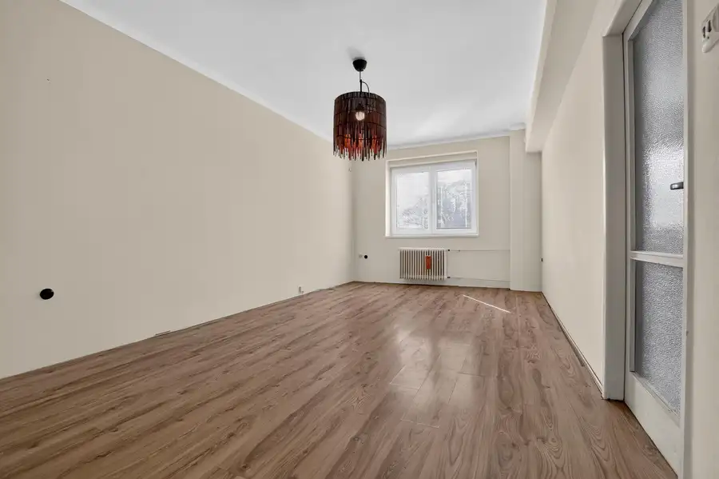
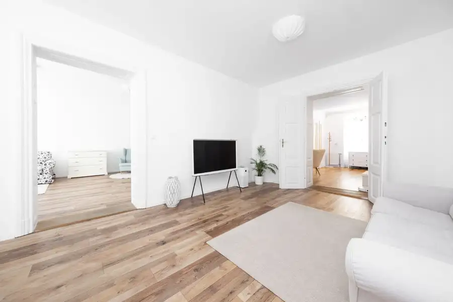
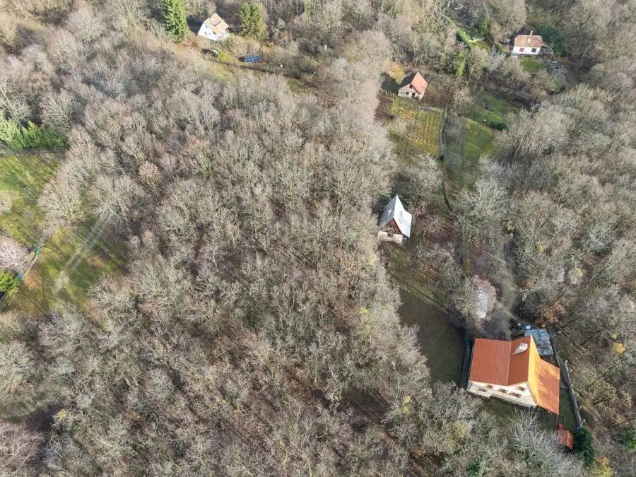

MIKELSSEN - Na predaj 2 izbový byt s nádherným výhľadom v novostavbe PREMIÉRE
Staré Mesto, Bratislava
- Dispozícia2-izbový
- Plocha51 m²
- Poschodie10. z 23
- StavNovostavba
- VlastníctvoOsobné
- Energetická triedaA
O nehnuteľnosti
Realitná kancelária MIKELSSEN ponúka exkluzívne na predaj príjemný 2 izbový byt v projekte PREMIÉRE na Šancovej ulici . Nehnuteľnosť s celkovou výmerou 51 m2 sa nachádza na 10.podlaží 23 podlažného bytového domu.Táto nehnuteľnosť sa predáva kompletne zariadená spolu s vnútorným parkovacím miestom.Byt s lukratívnym výhľadom na Bratislavslý hrad či Slavín je výbornou INVESTIČNOU príležitosť najmä pre krátkodobú formu prenájmu (aktuálne slúži na krátkodobý prenájom formou AirBnB resp. Booking s vysokou celoročnou vyťaženosťou).Z pohľadu lokality je bezkokurenčnou výhodou výborna dostupnosť do Starého mesta, blízkosť Hlavnej stanice ako aj Autobusovej stanice na Mlynských Nivách.BYT2 izbový byt s loggioucelková úžitková plocha: 51 m2 (byt 47,5 m2 + loggia 3,5 m2) orientácia: juhozápadmesačné zálohové platby: 180 Eur (správca, EE)VÝHODYnízke prevádzkové nákladyvysoké poschodie s nádherným výhľadom na dominanty Bratislavykompletne zariadený byt klimatizácia v obývacej izbemoderná vstupná recepcia 24/7dva rýchle výťahyvýborná dopravná dostupnosťkompletná občianska vybavenosťBYTOVÝ DOMnovostavba z roku 20202 výťahybezbariérový prístupkomunitná záhrada s posedením na 6. spochodíDISPOZÍCIAvstupná chodba s úložným priestorom, po pravej strane priestranná kúpelňa s klasickou vaňou a WC. Priamo oproti vstupným dverám vstup do dominantnej časti bytu, obývacej izby prepojenej s kuchyňou s kompletne zariadenou kuchynskou linkou. Z tejto časti bytu je vstup na loggiu s vonkajším sedením s výhľadom na Bratislavský hrad či Slavín. S obývacej izby je vstup do spáľne s manželskou posteľou, bohatým úložným priestorom a pracovným stolíkom.LOKALITAByt sa nachádza v obľúbenej časti Starého Mesta, ktorá je bezpečná a pokojná. V absolutnej blízkosti nájdete zrekonštruované trhovisko na Žilinskej ulici, detské ihrisko, potraviny, škola, či reštaurácie. Lokalita je ideálna z pohľadu dopravy, hneď vedľa bytového domu nájdete zástavky MHD s rýchlou dostupnosť do centra mesta, na Hlavnú resp. Autobusovú stanicu Nivy. Rovnako oceníte dobrý prístup na diaľničný obchvat, ako aj do centra (5.minút peši).CENA325.000,- Eur (290.000,- Eur za byt + 35.000,- Eur za garážové státie)(vrátane provízie a právneho servisu)V prípade záujmu nás neváhajte kontaktovať na čísle 0948 879 979 alebo emailom na michalcik@mikelssen.sk, radi pre Vás zorganizujeme obhliadku. Text, fotografie a 3D prehliadka sú autorským dielom a majetkom realitnej kancelárie MIKELSSEN
Parametre
| Bezpečnosť | Videovrátnik, Bezpečnostné dvere, Strážna služba |
|---|---|
| Cena vrátane energií | Nie |
| Doprava | MHD, Cesta |
| Druh | 2 izbový byt |
| Dátum zverejnenia | 8. 6. 2026 |
| Energetický certifikát budovy | A |
| Energie | 180 |
| Orientácia | Juhozápadná |
| Podlažie | 10 |
| Počet izieb / miestností | 2 |
| Počet lodžií | 1 |
| Počet nadzemných podlaží | 23 |
| Počet parkovacích miest v garáži | 1 |
| Počet spální | 1 |
| Rok kolaudácie | 2020 |
| Rok výstavby | 2015 |
| Stav nehnuteľnosti | Novostavba |
| Telekomunikácie | Káblová TV, Internet, Telefón, Optická sieť |
| Typ | Predaj |
| Typ konštrukcie | Zmiešaná |
| Vlastníctvo | Osobné |
| Vybavenie | Sklad, Vyhradené parkovanie, Strážna služba, Recepcia, Komunitná záhrada, Lodžia, Garážové státie, Altánok / posedenie |
| Vykurovanie | Klimatizacia, Ústredné |
| Úžitková plocha | 51 m² |
Kde to je


Mohlo by Vás zaujímať

BytNové10 275 000 €MIKELSSEN - Na predaj 2 izbový byt s možnosťou zmeny na 3 izbový v centre mesta Staré Mesto, Bratislava 2-izbový62.5 m²6. podlažie Realitná kancelária MIKELSSEN ponúka exkluzívne na predaj dispozične veľmi zaujímavý 2 izbový byt na Karadžičovej ulici. Byt sa nachádza na 5.…
BytNové10 599 000 €MIKELSSEN - Na predaj priestranný 4 izbový byt v lukratívnej časti historického centra mesta na Laurinskej ulici Staré Mesto, Bratislava 4-izbový147 m²2. podlažie Realitná kancelária MIKELSSEN ponúka exkluzívne na predaj jedinečnú investičnú príležitosť v podobe priestranného bytu, pripraveného pre klienta,…
PozemokNové10 70 000 €MIKELSSEN - Na predaj pozemok v lese s možnosťou výstavby nad Svätým Jurom Svätý Jur 2191 m² Realitná kancelária MIKELSSEN ponúka exkluzívne na predaj pozemok na svahoch v severnej časti mesta Svätý Jur, v južnej časti lokality Prostredné. Na…